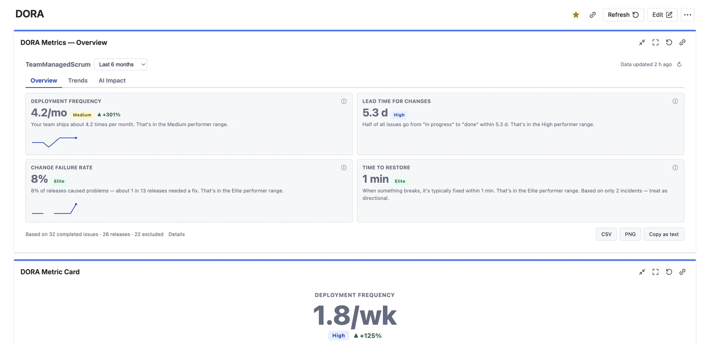
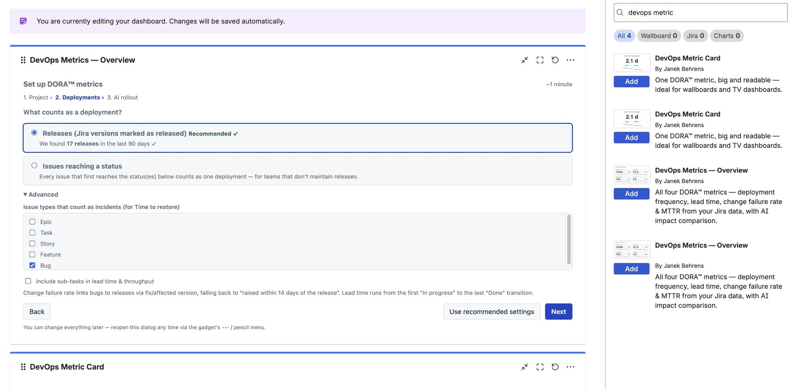
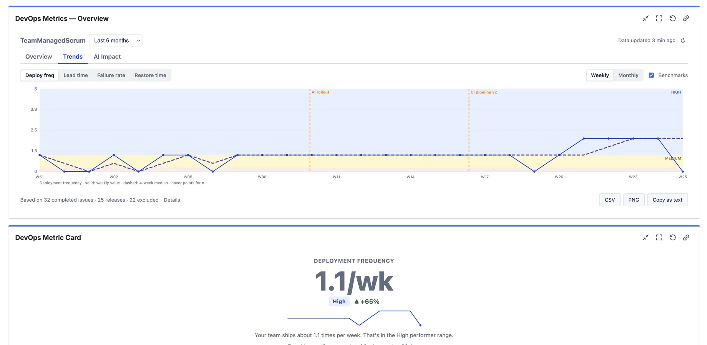
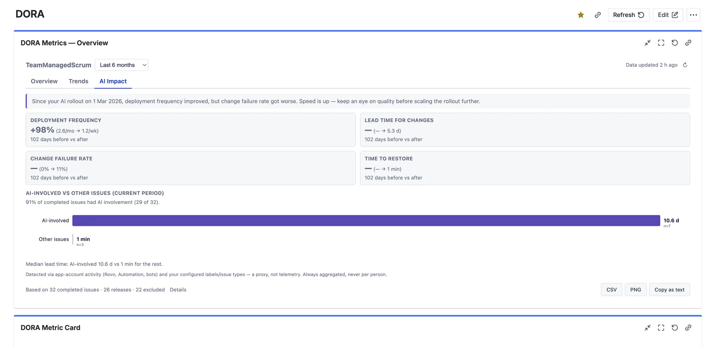
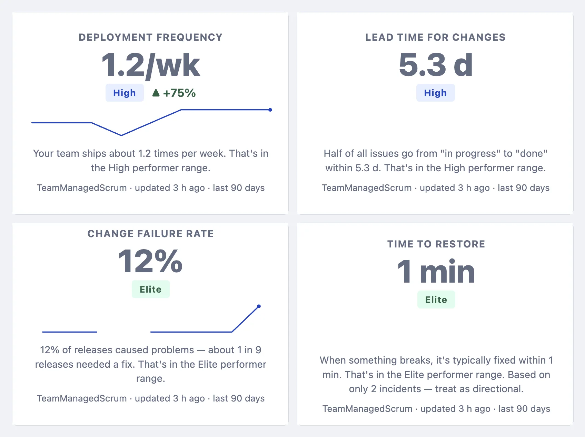

Also from Janek Behrens
Deployment frequency, lead time, change failure rate and MTTR — calculated from the Jira data you already have. No CI/CD setup, no second product, no spreadsheet.
Free for up to 10 users · Benchmark bands included · Read-only, runs on Atlassian

Four tiles, benchmark bands and a plain-language sentence under every number — engineering performance at a glance.
Spreadsheets & platforms vs this gadget
| Without this app | DevOps Metrics for Jira |
|---|---|
| ✕ DORA lives in slides & spreadsheets someone updates by hand | Live gadget on every Jira dashboard, refreshed automatically |
| ✕ Platform tools need CI/CD wiring, budget and an admin project | Works with the Jira data you already have — set up in minutes |
| ✕ Raw numbers without context | DORA benchmark bands (Elite / High / Medium / Low) built in |
| ✕ "AI ROI" measured in prompt counts | Before/after AI rollout deltas on real delivery outcomes PRO |
| ✕ Per-user surveillance risk | Team-level aggregates only — GDPR & works-council friendly |
| ✕ One-size-fits-all definitions | Your deployment, incident and done definitions PRO |
Honest by design: the app approximates the four DORA keys from Jira work items and shows exactly how each number is calculated. Directionally correct, consistently measured — without a platform project. See how each metric is calculated →
The gadget renders a meaningful sample the moment you add it. Pick your project and the setup wizard inspects it for you — if your team marks Jira versions as released, it recommends counting releases; if not, it suggests status transitions instead.
Every setting ships with a recommended value. One click on “Use recommended settings” and you're done.

The four keys, with context
Every metric is classified against the published DORA research — Elite, High, Medium or Low — so a number like “lead time 3.2 days” immediately means something to everyone in the room.
“12% of releases caused problems — about 1 in 8 needed a fix.” Every tile carries a sentence a non-technical stakeholder understands, plus a “How we calculate it” popup for the skeptics.
Weekly or monthly trends per metric with benchmark zones in the background, a smoothed median line, and event markers PRO for rollouts, re-orgs or new pipelines.
Also included
Trends & event markers

Weekly or monthly, with benchmark zones in the background — and your own markers PRO for the moments that changed the curve: AI rollout, new pipeline, team re-org.

Everyone's rolling out Copilot, Rovo or coding agents — and leadership wants to know if it's working. Prompt counts don't answer that. Delivery outcomes do.
Set your AI rollout date and the AI Impact tab compares equal periods before and after on all four DORA metrics, with an honest plain-language verdict. A second view compares AI-involved issues against the rest in the same period.
The DORA Metric Card shows a single metric big and readable from across the room — with its benchmark band, trend arrow and sparkline. Put four of them on a TV dashboard and the whole floor knows where delivery stands.

Setup
Install from the Marketplace, open a Jira dashboard, choose Add gadget and search for DORA.
The wizard inspects it and recommends what should count as a deployment. One click accepts the defaults.
The first analysis crawls up to 12 months of history in the background — then the gadget loads instantly, every time.
FAQ
Your Jira already knows your releases, status transitions, bugs and incidents. The app approximates the four keys from that data and shows exactly how each number is calculated. It's directionally correct and consistently measured — ideal for teams that want DORA visibility without a platform project. If you need pipeline-level precision across CI tooling, you need a platform like Compass; if you need answers on your Jira dashboard this week, you need this gadget.
You decide. The default — recommended automatically if your team maintains them — is Jira versions marked as released. Teams without releases can count issues reaching specific statuses instead. Incident types for MTTR and sub-task handling are configurable too PRO.
Yes — that's the signature feature. Set your rollout date and the AI Impact tab compares equal periods before and after on all four metrics with a plain-language verdict, plus an AI-involved vs other issues comparison. Detection uses labels, issue types and automation activity — a transparent proxy, always aggregated, never per person.
No and no. The app is strictly read-only. It stores only weekly aggregate counters and duration statistics in Atlassian Forge Storage — no names, no account IDs, no per-person metrics, ever. Your data never leaves Atlassian — see the Security Policy.
Free for teams of up to 10 users, with a free trial for larger sites. The free experience is a real DORA overview for one project — tiles, benchmark bands and trends. Pro adds the AI Impact analysis, custom definitions, multi-project views, the wallboard Metric Card, event markers and exports. See the Marketplace listing for per-user pricing.
Also from Janek Behrens
Free for up to 10 users — all four DORA metrics on your dashboard, in minutes.
DORA™ is a trademark of Google LLC. DevOps Metrics for Jira is an independent product by Janek Behrens and is not affiliated with or endorsed by Google. “DORA metrics” refers to the four software delivery metrics defined by the DevOps Research and Assessment program.